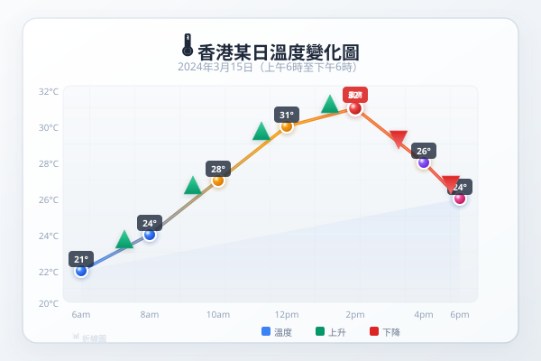

| # | 題目 | 答案 | 類型 |
|---|---|---|---|
| 1 | 長方形長 12 cm、闊 8 cm。面積是多少 cm2？周界是多少 cm？ | 96 cm² | auto |
| 2 | 三角形底 10 cm、高 6 cm。面積是多少 cm2？ | 30 cm² | auto |
| 3 | 閱讀棒形圖：一月45、二月52、三月48。哪個月最高？三個月的平均是多少？ | 0...45 | manual |
| 4 | 一個梯形上底 6 cm、下底 10 cm、高 5 cm。面積是多少？ | ___ | manual |
| 5 | 圓的半徑是 7 cm（π ≈ 227）。圓周長是多少？面積是多少？ | ___ | manual |
| 1 | 參照上圖氣溫棒形圖。求一月至六月氣溫的平均數、中位數、和最高與最低的相差。 | ___ | manual |
| 2 | 參照上圖。一個正方形花園邊長 15 m，若每 m² 的面積需要水量 = 當月平均溫度(L)，求三月和五月共需多少 L 水？ | 225 | auto |
| 3 | 一個L形複合圖形由兩個長方形組成：豎向 8 cm × 3 cm，橫向 5 cm × 4 cm。求總面積。 | ___ | manual |
| 4 | 一個T形複合圖形：頂部長方形 12 cm × 3 cm，柱身 5 cm × 7 cm。求總面積。 | ___ | manual |
| 5 | 在方格紙上畫出一個複合圖形，量度各邊長，記錄數據，計算面積，並畫棒形圖表示各部分的面積。 | ___ | manual |
| 6 | 一個房間長 6 m、闊 4 m、高 3 m。(a) 求牆壁的總面積（四面牆，不計天花板和地板）。(b) 如每罐油漆可塗 10 m²，需要買幾罐？(c) 畫棒形圖 | 1...2 | auto |
| 7 | 一個梯形花圃：上底 8 m、下底 14 m、高 6 m。花圃分成兩半，一半種玫瑰（每m²可種 4 棵），一半種向日葵（每m²可種 2 棵）。求：(a) 總面積； | 0...8 | manual |
| 8 | 一個長方形長 15 cm、闊 10 cm。求面積和周界。 | 150 cm² | auto |
| 9 | 以下棒形圖數據：A=30, B=45, C=25, D=50。求：(a) 總和 (b) 平均數 (c) D比C多多少？ | 0...30 | manual |
| 10 | 一個正方形花園邊長 9 m，外圍有一條闊 1 m 的小路。求小路的面積。（提示：大正方形 − 小正方形） | 81 | auto |
| 11 | 一個房間的平面圖是複合圖形（L形）：主體 8 m × 6 m，凸出部分 3 m × 2 m。求總面積。若要鋪地磚（每塊 0.25 m²） | 1...2 | manual |
| 12 | 以下折線圖顯示小明六次數學測驗分數：72, 68, 78, 82, 76, 88。(a) 求平均分。 (b) 哪一次進步最大？(c) 若60分合格，不合格的有幾 | 1...4 | manual |
| 13 | 某公園有兩個區域：遊樂場（梯形：上底 20 m、下底 30 m、高 15 m）和草地（長方形：25 m × 18 m）。求：(a) 各區域面積 (b | ___ | manual |
| 14 | 一個圓形水池（半徑 7 m）旁邊有一條闊 2 m 的環形小路。求小路的面積。（π 取 227） | 154 | manual |
| 15 | 學校禮堂的地面是一個複合圖形：長方形（30 m × 20 m）+ 半圓形（直徑 = 20 m，連接在長方形一側）。(a) 求總面積。 (b) 若鋪設 | ___ | manual |
| 16 | 一個長方體水箱長 50 cm、闊 30 cm、高 40 cm，裝了 34 滿的水。放入一塊石頭完全浸沒後，水面升至 35 cm。(a) 求石頭體積。 (b) 若 | 60000 | auto |
| 17 | 一個社區花園分為四部分：A（正方形，邊長 12 m）、B（長方形，18 m × 8 m）、C（三角形，底 14 m、高 10 m）、D（梯形，上底 | 144 cm² | auto |
| 18 | 一個長方形地皮（50 m × 30 m）要劃分為三個區域：房屋（佔 50%）、花園（佔 30%）、車道（佔 20%）。房屋的地基需要向下挖 2 m | ___ | manual |
| 19 | 以下棒形圖顯示某店四個月的營業額：一月 $12000、二月 $15000、三月 $10000、四月 $18000。(a) 求四個月的總營業額和平均營業額。(b) | 0...12000 | auto |
| 20 | 一個圓形花園半徑 10 m。花園中央有一個正方形水池（邊長 6 m）。求：(a) 花園總面積 (b) 水池面積 (c) 可種植面積 (d) 可種植面積佔花園總面 | 36 | auto |
| 21 | 一個教室長 10 m、闊 8 m、高 3.5 m。(a) 求四面牆的面積（扣除門窗共 12 m²）。(b) 如每罐油漆覆蓋 15 m²，需買幾罐？(c) 以圓形 | 1...2 | auto |
| 22 | 學校圖書館三類書的借閱數據：小說（每月平均 120 本）、科普（每月平均 80 本）、漫畫（每月平均 100 本）。(a) 求各佔總借閱量的百分比。(b) 以圓 | 1...40 | manual |
| 23 | 一個公園分為三個區域：A區（長方形 40 m × 25 m）、B區（三角形 底 30 m、高 20 m）、C區（半圓形 直徑 14 m，π=2 | 300 cm² | auto |
| H1 | 長方形長 14 cm、闊 9 cm。求面積。若長增加 2 cm、闊不變，新面積是多少？增加了多少%？ | 126 cm² | auto |
| H2 | 三角形底 16 cm、高 9 cm。求面積。 | 72 cm² | auto |
| H3 | 一個棒形圖顯示五個月的銷售量：100, 120, 90, 150, 140。求平均月銷售量。 | 0...100 | manual |
| H4 | 梯形上底 5 cm、下底 11 cm、高 6 cm。求面積。 | ___ | manual |
| H5 | L形複合圖形：豎向長方形 10 cm × 4 cm，橫向長方形 6 cm × 5 cm。求總面積。 | ___ | manual |
| H6 | 一個花園由長方形（20 m × 12 m）+ 半圓形（直徑 = 12 m）組成。(a) 求總面積。(b) 若長方形部分種花（每m² $60），半圓形 | 1...8 | manual |
| H7 | 一個長方體水箱長 40 cm、闊 25 cm、高 30 cm，原有水深 18 cm。放入一塊 4500 cm³ 的石頭。(a) 水會否溢出？(b) 如果溢出，溢 | ___ | manual |
| H8 | 一個社區的三類廢物回收量（公斤）：塑膠 240、紙張 360、金屬 150、玻璃 90。(a) 求全體總數。(b) 計算各類所佔的百分比和圓心角。(c) 繪製圓 | ___ | manual |
霖楓學苑 · LF Academy · 自動答案生成器 v1.0 · 手動題目請老師覆核